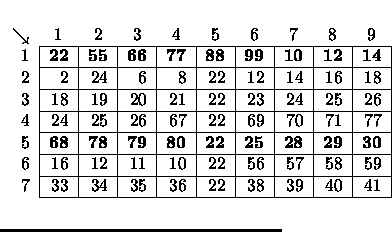
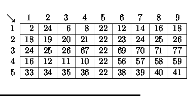
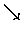
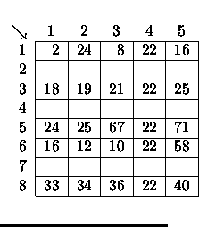
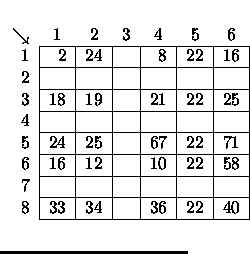
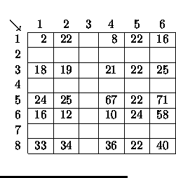
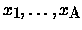

| Spreadsheet Tracking |
Data in spreadsheets are stored in cells, which are organized in rows (r) and columns (c). Some operations on spreadsheets can be applied to single cells (r,c), while others can be applied to entire rows or columns. Typical cell operations include inserting and deleting rows or columns and exchanging cell contents.
Some spreadsheets allow users to mark collections of rows or columns for
deletion, so the entire collection can be
deleted at once. Some (unusual) spreadsheets allow users to mark collections
of rows or columns for insertions too.
Issuing an insertion command results in new rows or columns being inserted
before each of the marked rows or
columns. Suppose, for example, the user marks rows 1 and 5 of the spreadsheet
on the left for deletion. The
spreadsheet then shrinks to the one on the right.
|  |  |
If the user subsequently marks columns 3, 6, 7, and 9 for deletion, the spreadsheet shrinks to this.
|  | 1 | 2 | 3 | 4 | 5 |
| 1 | 2 | 24 | 8 | 22 | 16 |
| 2 | 18 | 19 | 21 | 22 | 25 |
| 3 | 24 | 25 | 67 | 22 | 71 |
| 4 | 16 | 12 | 10 | 22 | 58 |
| 5 | 33 | 34 | 36 | 22 | 40 |
If the user marks rows 2, 3 and 5 for insertion, the spreadsheet grows to the one on the left. If the user then marks column 3 for insertion, the spreadsheet grows to the one in the middle. Finally, if the user exchanges the contents of cell (1,2) and cell (6,5), the spreadsheet looks like the one on the right.
|  |  |  |
You must write tracking software that determines the final location of data in spreadsheets that result from row, column, and exchange operations similar to the ones illustrated here.
An operation to exchange the contents of cell
(r1, c1) with the contents
of cell
(r2, c2) is given by:
EX r1 c1 r2 c2
The four insert and delete commands--DC (delete columns), DR (delete rows),
IC (insert columns), and IR (insert rows) are given by:
<command> A x1 x2
xA
where <command> is one of the four commands; A is a positive integer less
than 10, and

are the labels of
the columns or rows to be deleted or inserted before. For each insert and
delete command, the order of the rows or
columns in the command has no significance. Within a single delete or insert
command, labels will be unique.
The operations are followed by an integer which is the number of queries for
the spreadsheet. Each query consists of
positive integers r and c, representing the row and column number of a cell
in the original spreadsheet. For each
query, your program must determine the current location of the data that
was originally in cell (r, c). The end of
input is indicated by a row consisting of a pair of zeros for the spreadsheet
dimensions.
The data file will not contain a sequence of commands that will cause the
spreadsheet to exceed the maximum size.
7 9 5 DR 2 1 5 DC 4 3 6 7 9 IC 1 3 IR 2 2 4 EX 1 2 6 5 4 4 8 5 5 7 8 6 5 0 0
Spreadsheet #1 Cell data in (4,8) moved to (4,6) Cell data in (5,5) GONE Cell data in (7,8) moved to (7,6) Cell data in (6,5) moved to (1,2)